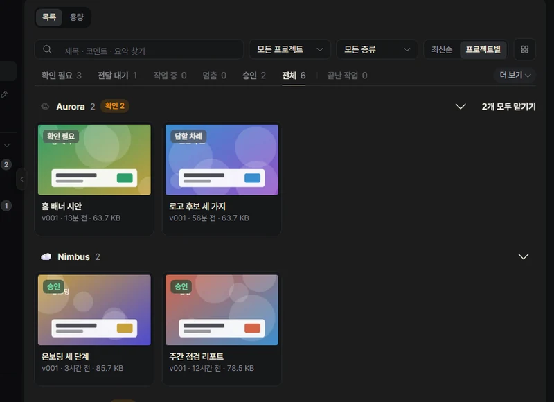
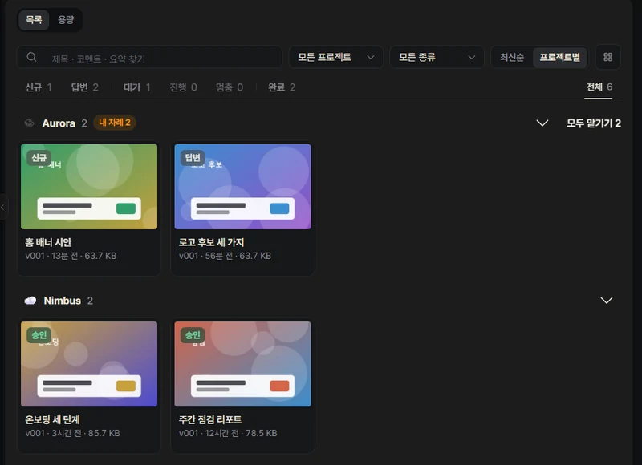
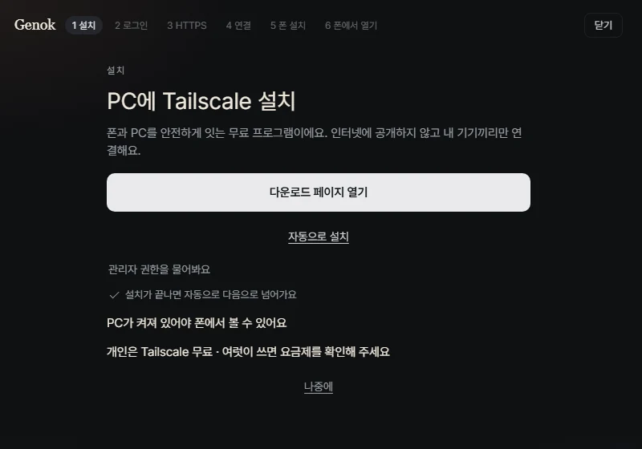
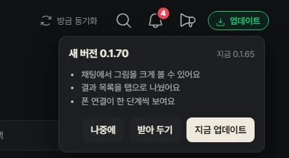
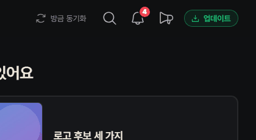
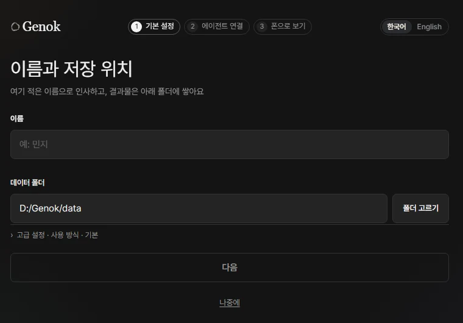
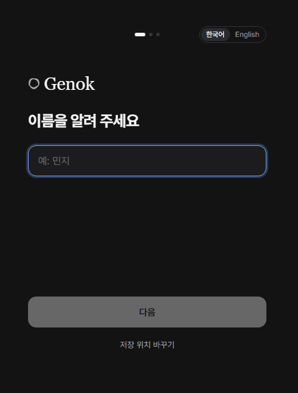

Codex replies faster, plus a new results list and phone setup
Devlog · 2026-10-03 · 0.1.65 → 0.1.68
New in the app
- Send Codex chats from inside Genok0.1.66BeforeA reply showed up only long after you sentNowThe reply follows as soon as you send, and the chat runs through Codex's app-server
- Answer Codex approval requests in the chat0.1.66When Codex asks whether it may run something, Allow and Decline buttons appear in the chat
- Two row sizes0.1.66A toggle in the header switches between large and small rows. A small row fits the name and avatar on one line
- Split view up to 3 × 20.1.66See several sessions side by side on one screen. Rows that are open get a mark
- Chat progress and larger images0.1.67BeforeYou couldn't tell what was happening after you sent a lineNowLive progress appears under the line you sent, and images open large inside the app when clicked
- Three chat tools0.1.68Context and usage display, a copy button, and recall of the last line you sent
- A tidier results list0.1.68BeforeNew results and ones you had opened were mixed togetherNowNew and opened results are separated, each session has one work item, and you can see who is stuck
Before 
Now 
- Zoom into results0.1.68Zoom in on a result. The zoom setting is the same on every screen
- Select several sessions at once0.1.68Pick several sessions from the row menu and act on them together. Unread sessions get a mark
- Phone connection in one go0.1.68BeforeTurning on the connection opened a second windowNowPhone connection turns on in one step, and the access setup moves on by itself one step at a time
Before 
Now - Updates in one step0.1.68BeforeChecking and installing were separateNowOne click on the check button carries on through download and install
Before 
Now 
- First-run guide0.1.68BeforeYou had to start the first chat by copying and pastingNowYou start the first chat right inside Genok, with one step at a time
Before 
Now 


Fixed in the app
- Codex send speed0.1.67BeforeIt answered only after getting its turnNowIt answers the moment the app server gets the turn
- Chat screen jumping0.1.66BeforeThe screen redrew every 30 seconds and jumpedNowIt redraws only when you click a session or the turn changes
- Floating window0.1.66 · 0.1.68BeforeIt broke at some display scales and showed an empty boxNowIt matches the scale, shows no empty box and remembers its size when restored
- Panel motion0.1.66BeforePanels slid in from the sideNowThey appear in place. Lists that change on their own don't slide either
- Default session list view0.1.66BeforeIt opened as an expanded listNowIt opens by folder with large rows
- First results tab0.1.67BeforeAnother tab opened when it was emptyNowIt always opens on Needs check, even when empty
- First-run, connection and consent text0.1.67 · 0.1.68BeforeEach screen had several linesNowOne line stays and the rest is folded. First run asks one thing per screen
- Phone chat0.1.68BeforeThe chat got cramped when the keyboard came up, and the screen jumped on refreshNowThe chat gets more room and the screen stays put. The header is one line
- Claude model choiceRevertedBeforeChanging the model tried to apply it to the running task right awayNowBack to the old way: the new model applies from the next line

Other changes
0.1.66
- New Codex chats work like the Codex appBeforeNot shown in the Codex app listNowNew chats show up in the Codex app list too
- Connection-check temp folder hiddenBeforeThe check folder showed up as a session or projectNowIt stays out of lists, and new sessions don't open there
- Allow connection permissions at onceBeforePermissions were asked separately mid-chatNowAllowed once per agent during setup
- Allowing at once keeps what you turned offNowPermissions you turned off stay off
- One word for permissionBeforeTwo different words were mixedNowAllow, across the app
- Open in Claude Code when folder trust failsBeforeOnly a failure sentenceNowA button opens that folder
- New Claude session opening in the wrong folderBeforeIt sometimes opened in a temp work folderNowTied to the right project instead
- New sessions start in the last project usedNowIf the folder is gone, it is skipped and you are told once
- Start refusals name the folderBeforeThe reason was vagueNowFolder name and next step, once
- Send failures shown onceBeforeThe same failure appeared several timesNowOnce, on that line in the chat or as a toast
- Connected once Codex answersBeforeCodex worked but showed Claude onlyNowThe title bar matches what is connected
- Session list view: By folder / SessionsNowSwitch with the toggle at the top
- Sessions view shows session namesBeforeThe last thing said looked like the titleNowThe session name shows; the text stays searchable
- Session order no longer changes with statusBeforeRows moved around with statusNowOrder stays fixed; your turn is shown by color only
- Light runs across working sessionsNowA light runs along the top line, marked in mint
- Drag session rows to reorderNowDrag a row and drop it where you want
- Chats always open at the latest lineBeforeOpened where you left off or at a dividerNowOpens at the latest line and keeps the spot on redraw
- Round jump-to-bottom buttonBeforeA new-messages pillNowA button when you scroll far up, with the unread count
- Floating window as a big gray squareBeforeA gray square on monitors with a different scaleNowShows correctly at each monitor's scale
- Session number toast on the floating windowBeforeA long session number appeared with a star addedNowNo toast, and stray stars are cleaned up
- Floating alerts covering blocksBeforeAlerts covered the blockNowOne small line under the block
- Empty frame when the floating window closesBeforeAn empty frame was left behindNowCloses without one
- Item comment box fixed to the bottomBeforeFloated above the status bar and looked like a comment cardNowSits at the bottom of the pane, set apart by color
- Model menu and icon picker polishedNowSmoother menu and icon choice
- Phone menu alignmentBeforeMenu text was misalignedNowLines up
0.1.67
- Note on chats missing from the Codex appNowTells you older-style chats don't appear in the app list
- Open sessions marked in split viewBeforeNo visible markNowA short line on open rows, a dot on folders
- Emoji shown twice in titlesBeforeThe emoji appeared in both the avatar and the titleNowShows once
- Enter in confirm dialogsBeforeYou had to clickNowEnter presses the main button
- Results always open on Needs checkBeforeOpened on another tab when emptyNowOpens on Needs check even when empty
- Current-screen bar in the left menuNowA thin bar on the open screen's row
- Shorter first-run, connection and permission textBeforeLong explanationsNowA title line and one line of text; the rest is folded
- Connection setup help on clickBeforeHelp showed only on hoverNowClicking the info button opens the line
- Shorter consent dialogBeforeLong, overlapping title and reasonNowShort, complete sentences; the rest is folded
- Update notes foldedBeforeNotes were expandedNowNotes and known issues are folded
- Screens, windows and menus appear in placeBeforeThey rose up or slid in from the sideNowThey appear gently in place
- Phone chat no longer slides inBeforeSlid in from the side and replayedNowAppears in place and doesn't replay when you switch sessions
- No motion for lists that change on their ownBeforeRows moved even on automatic changesNowThey move only for things you do
- New sessions briefly vanishing from the listBeforeA new row disappeared and came backNowIt stays
- Shortcut letters in the session row right-click menuNowPress the letter next to a menu item to run it
- Unread dots and read marksNowA dot shows, and the menu switches read and unread
- Screen drawn twice after a right-clickBeforeThe page was copied and overlappedNowDrawn once
- Shorter chat, results and settings textBeforeLong explanationsNowOne line, with Show more to expand
- Count and size when emptying the trashBeforeUnclear what would be deletedNowShows count, size and whether it can be undone
- Screen sketch in layout settingsBeforeTurning a switch on showed no visible changeNowPanes in the sketch appear and disappear as you switch
- Thumbnail size preview in settingsNowOne line per size, with the chosen one highlighted
0.1.68
- Full English translationBefore1,146 English strings, with many gapsNow2,846, covering all the main screens
- Korean particles and dates on English screensBeforeKorean particles were attached after names on English screensNowEnglish names and English dates
- New session menu: Turn on, New, StandingBeforeA long menuNowThree short lines with line icons
- Create by describing itNowWrite one line about the work and it suggests a name, group and role
- Your words are kept when suggestions failNowOpens as you wrote it on no connection, failure or timeout
- One Continue on finished chatsBeforeSeveral buttonsNowA single Continue next to the status
- End several sessions at onceNowAsks once, then ends the selected running sessions
- Turn on an off department to bring back a chatBeforeA Turn on button on every rowNowFind and turn on the department from the arrow next to New session
- Past chats of an off departmentNowRecent chats, newest first, and you can start a new one
- Chat list shows sessions onlyBeforeFolded off departments were mixed into the listNowLeft out of the list and search
- Chat list opens on the top rowBeforeOpened the first room the server sentNowOpens the top visible row
- Scrollbar no longer covers the list buttonBeforeThe New session button was hidden by the scrollbarNowRoom is left for the scrollbar
- Narrow list header breaking into three linesBeforeTitle and toggles split over three linesNowFits on one or two lines
- Title hidden in a narrow listBeforeThe title was hiddenNowThe title gets its own line
- Phone chat: session list firstBeforeStraight into one chatNowThe list comes first, sorted by recent activity
- Swipe phone list rowsNowLeft for menu actions, right to hide and undo
- Icons for phone swipe actionsNowLine icons with labels: Continue, Read, Hide, End
- Edge drag on the phoneNowFrom the left edge to the list, from the right into the chat
- Floating New session button on the phoneNowA pill above the tab bar; its menu opens upward
- PC features in the phone chat menuBeforeChanged files were hidden in the folded headerNowChanged files and background views are in the menu
- No zoom or split on the phoneBeforeThe screen zoomed and bouncedNowApp screens don't zoom; results still can
- One-line phone chat headerBeforeThe header took several linesNowOne-line header and a one-line input
- Phone model popover becomes a bottom sheetBeforeA small popoverNowA sheet that rises from the bottom, with a usage bar
- Phone chat times and code copyBeforeA time on every lineNowTime on the last line only; long-press code to copy
- More chat room when the phone keyboard is upBeforeThe keyboard squeezed the chatNowSlimmer status and input lines give the chat more room
- Phone tab bar disappearingBeforeIt didn't come back after closing a chatNowAlways comes back
- Phone new chat button shapeBeforeA full-width barNowA small pill with a 44px touch area
- Phone unread rows breaking verticallyBeforeIcon and title split onto separate linesNowOne tidy line; the read mark has a 44px touch area
- White background for reportsBeforeReports without a background were hard to readNowShown on white
- Item screen (PC) fills the heightBeforeA second scroll inside the screenNowFills the pane with one scroll; side panel 320px
- Item screen tools overlaid on topBeforeZoom and width tools took a whole rowNowOverlaid on the view
- Item screen (phone) report heightBeforeNested scrollingNowFits the report height; Answer n buttons jump to questions
- Item side panel foldedBeforeLong rows of chips and filesNowFolded behind Show more; comment tools appear when you use them
- 44px touch areas on the phoneBeforeSome buttons were smallNowCards, settings tabs, colors and item tabs are 44px
- No text under 12pxBeforeUsage, tags and times were smallerNowAll 12px or larger
- Settings explanations behind Show moreBeforeMode, About and License text was fully expandedNowOpens when you click Show more
- Model choice applies to working sessionsBeforeIt kept the old model after you choseNowRestarts the same chat to use the new model
- Model applies to tasks waiting for an answerBeforeNot applied to a task paused on a questionNowTreated as idle and applied
- Short labels for Codex tool callsBeforeThe script was shown as isNowName and one line
- Note that new chats need a reopen in the Codex appNowMentioned once on the connect screen and under the first draft
- Open in Codex app button removedBeforeAn open button in the chatNowButton removed
- Floating window stays reachable when displays changeBeforeLeft out of reach when the display layout changedNowReturns to its place or is brought within reach
- Small floating block positionBeforePushed off the right edge after a restartNowAligned to the right edge by width
- Floating pin no longer takes the keyboardBeforePressing the pin took keyboard inputNowIt doesn't, and tells you whether the window actually came up
- Floating mini chatBeforeShow more on every replyNowShow more only on cut-off replies, one click back to the main window, 12px or larger
- Floating window pauses when hiddenBeforeKept refreshing while hiddenNowRefresh and motion stop while hidden
- Chat position kept when resizing the floating windowBeforeResizing lost your placeNowKept between the two large sizes; 14px resize corner
- Floating block size iconsBeforeButtons looked emptyNowIcons are drawn again
- Dragging the floating windowBeforeDrifted from where you grabbed itNowThe grabbed spot stays under the pointer
- Floating window showing an empty box or the app screenBeforeAn empty round box or the main screen came up on topNowReloads once, and hides if that fails
- Main window resizing on every activationBeforeIt changed size each time and lost maximizeNowMaximized or minimized state is kept
- Agent connections in settings, one line eachBeforeA long list of stepsNowOne line per agent, with a button only when needed
- Same agent color dotsBeforeDifferent shapes on each screenNowThe same 8px dot before the name
- Settings connection shows only the next stepBeforeFinished steps were listed tooNowOne next step and a Later link
- Questions come with the suggested answer pickedBeforePick, then sendNowThe suggestion is selected on open and ready to send
- Continue and Hide run right awayBeforeAsked firstNowRun in one click; hiding shows an undo toast
- Session row buttons are text onlyBeforeIcon and textNowText only
- New session sheetBeforeAgents were hard to tell apart and it was cut off in narrow windowsNowAgent color dots, simple icons, default folder Genok
- New session pill cut off in a narrow listBeforeCut offNowWraps and stays visible
- One loading indicatorBeforeDifferent loading bars and skeletons per screenNowOne breathing logo ring in the center
- Home in a single columnBeforeAn info column plus search, dates and moreNowA one-line greeting, one card, the next three, and Show more
- Home stretching on wide screensBeforeStretched to 3264px in a 3840px windowNow820px at most
- Sidebar projects as one blockBeforeA group title plus hidden menu and open-in-browser rowsNowClick the title to expand, closed by default, 208px wide
- Counts on the collapsed menu as corner dotsBeforeNumber pills covered the iconsNowCorner dots; clicking a project icon opens the project
- Logo stays in long menusBeforeIn short windows the logo got squeezed and lower items were out of reachNowThe logo stays at the top and the menu scrolls